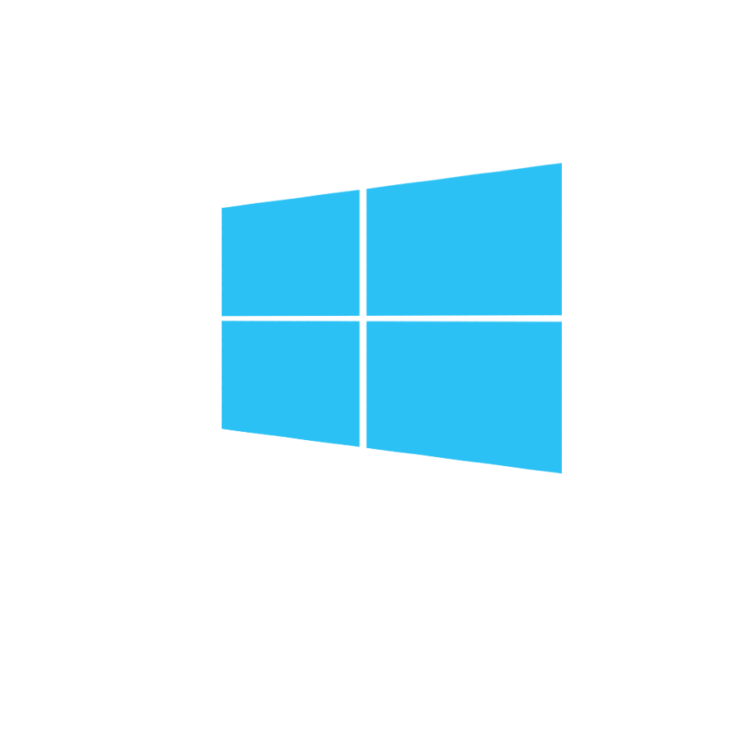

Windows
O Windows é um sistema operacional desenvolvido pela Microsoft e é um dos mais amplamente utilizados no mundo. Conhecido pela sua interface gráfica amigável e vasta compatibilidade com software e hardware, o Windows é popular em ambientes domésticos e empresariais. Suas versões mais recentes incluem o Windows 10 e o Windows 11, oferecendo recursos como a Cortana, o Microsoft Edge, e melhorias na segurança e no gerenciamento de arquivos.

macOS
Desenvolvido pela Apple Inc., o macOS é o sistema operacional utilizado nos computadores Mac. Caracteriza-se pela sua interface elegante e intuitiva, integração profunda com o ecossistema Apple, e foco em segurança e desempenho. As versões mais recentes incluem recursos como o Continuity, que permite a integração entre dispositivos Apple, e o Siri, o assistente virtual da Apple. O macOS é conhecido por sua estabilidade e design refinado.

Linux
Linux é um sistema operacional de código aberto que oferece uma ampla gama de distribuições, como Ubuntu, Fedora e Debian. É conhecido por sua flexibilidade, segurança e robustez. Linux é amplamente utilizado em servidores, supercomputadores e dispositivos embarcados, além de ser uma opção popular para usuários avançados e desenvolvedores. A sua natureza open source permite que os usuários personalizem o sistema conforme suas necessidades.

Android
Android é um sistema operacional baseado em Linux desenvolvido pela Google, projetado principalmente para dispositivos móveis, como smartphones e tablets. É conhecido pela sua ampla gama de aplicativos disponíveis na Google Play Store e pela personalização que oferece aos fabricantes e usuários. O Android é o sistema operacional móvel mais popular no mundo, com atualizações frequentes e uma grande comunidade de desenvolvedores.
iOS
O iOS é o sistema operacional desenvolvido pela Apple para seus dispositivos móveis, incluindo iPhones e iPads. Oferece uma experiência de usuário fluida e segura, com uma interface intuitiva e um ecossistema de aplicativos controlado pela App Store. O iOS é conhecido por sua integração com outros produtos Apple e por suas atualizações regulares que trazem novos recursos e melhorias de segurança.